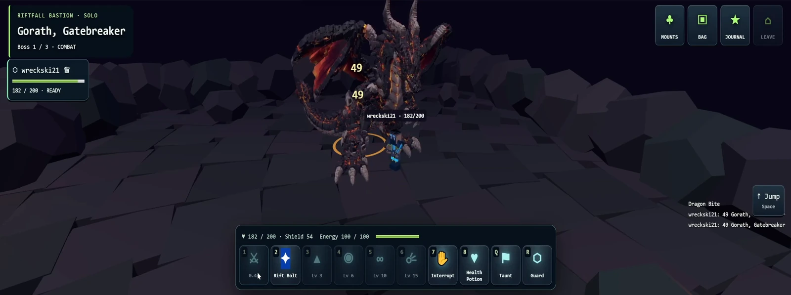
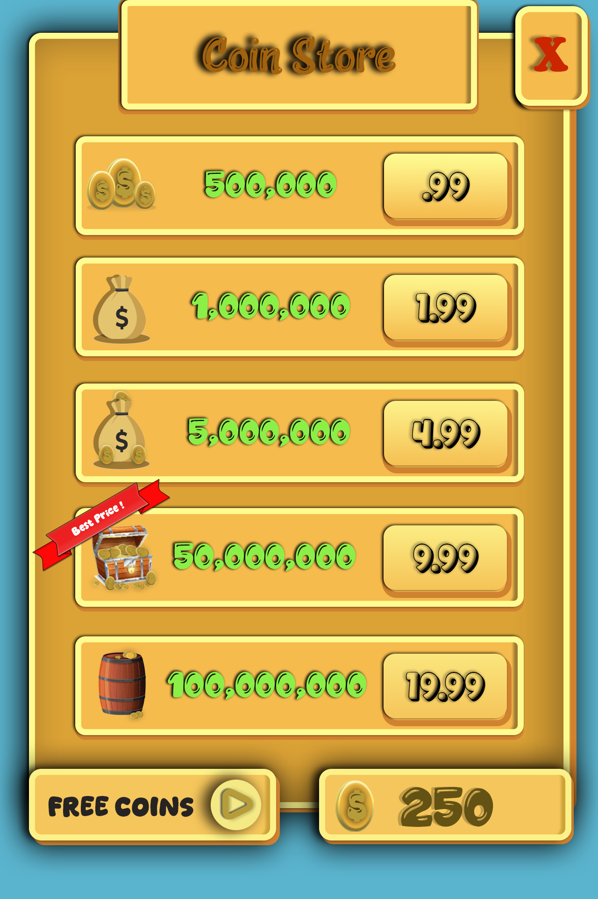
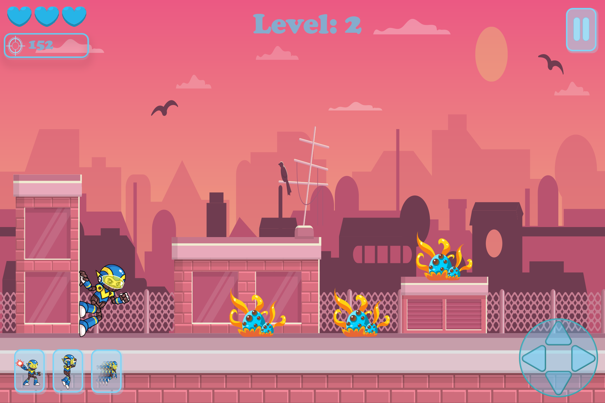
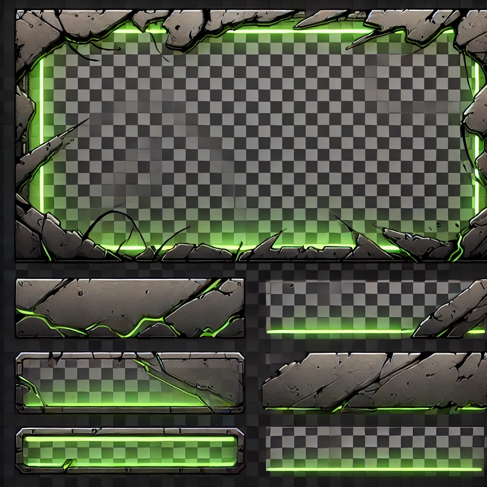
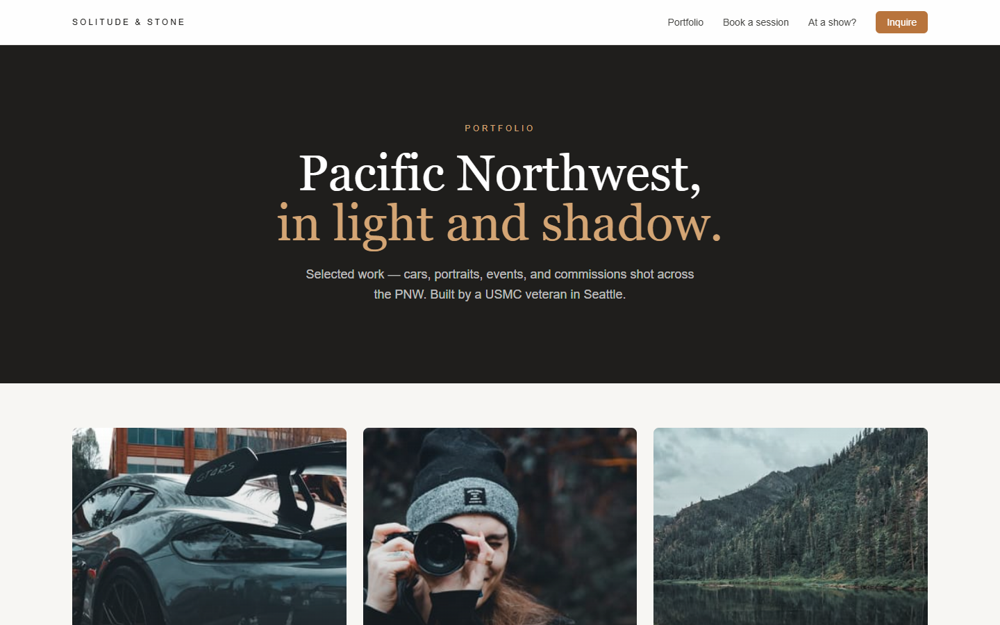
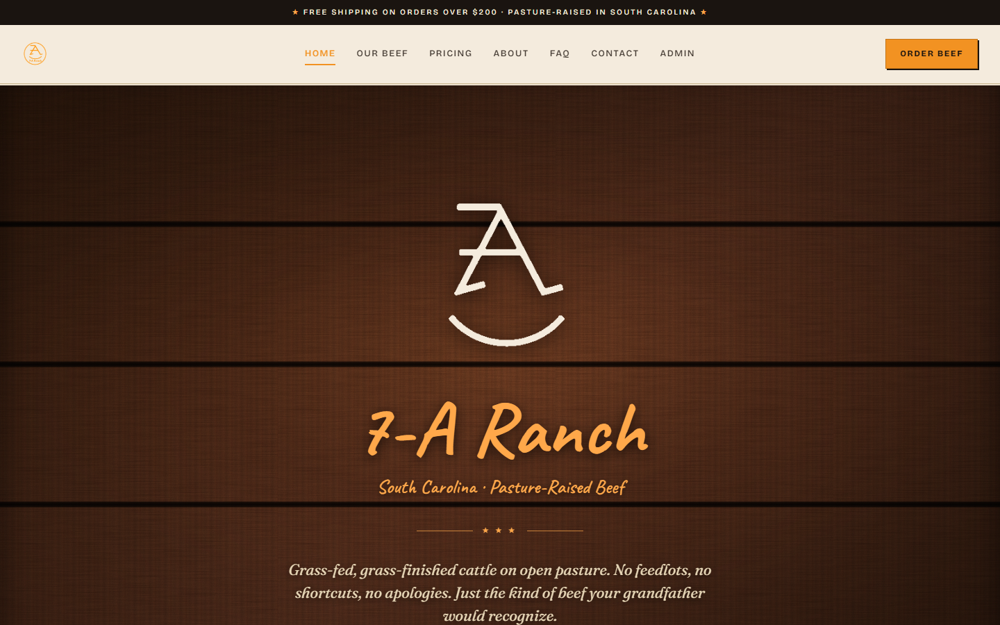
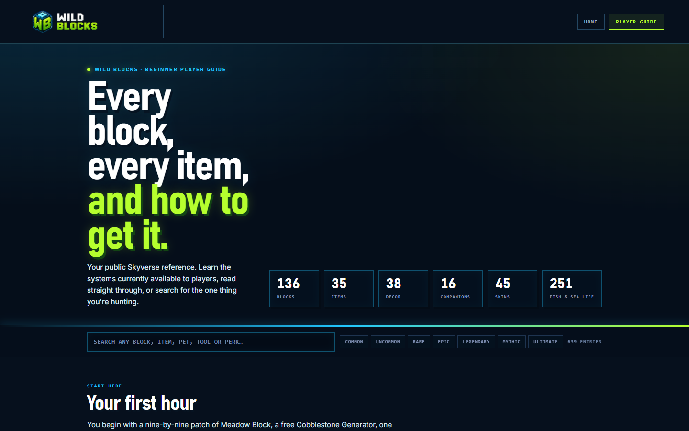

Start with intent
Define what the player or user is trying to understand, decide, or do before shaping the interface.
Gameplay / UX/UI / Interaction design
I’m Tim. I turn gameplay and interface ideas into clear, working experiences—from character controls and boss encounters to HUDs, storefronts, and reusable UI components.
01 / Selected projects
Different worlds. Different kinds of play.
A closer look at the projects I’m building and the work behind them.

Player abilities, boss behavior, and the character work behind a dragon encounter.
A tea-farming game built around character controls, directional actions, and world interactions.

A mining-game prototype with exploration, a companion, and progression-oriented interface design.
02 / UX/UI & Interaction Design
Interface studies focused on hierarchy, readable actions, consistent components, and the information players need in the moment.

A player-card concept that groups identity, progression, performance stats, and biography into one scannable view.
Read case study ↗
A mobile storefront study using repeated offer patterns, price grouping, and a featured-value treatment.
Read case study ↗
A touch-first gameplay layout that separates status, actions, movement, and pause controls around the playfield.
Read case study ↗
A modular visual-language study exploring how one framed surface can scale into panels, bars, buttons, and stateful elements.
Read case study ↗03 / Web Product & UX/UI
Live web work across visual storytelling, commerce, game information, and SaaS conversion—designed around clear paths, responsive layouts, and reusable systems.

A photography experience that leads visitors from visual discovery to session inquiries and client gallery access.
View case study ↗
A direct-to-customer ranch site that builds trust, explains the product, and guides shoppers toward ordering.
View case study ↗
A searchable field manual that turns hundreds of game items, rules, and progression systems into a usable reference.
View case study ↗
A focused product-marketing flow that explains AI automation, packages the offer, and moves local businesses toward a demo.
View case study ↗04 / Design approach
I connect gameplay instincts with interaction design: understand intent, reduce ambiguity, prototype quickly, and refine what the user sees and feels.
Define what the player or user is trying to understand, decide, or do before shaping the interface.
Use placement, scale, contrast, and grouping to make priority visible without explanation.
Make interactive elements look actionable and give feedback that connects an input to its result.
Move from composition to working behavior, then test edge cases, consistency, and what should improve next.
My experience with Unity/C#, gameplay systems, animation, software development, and AI-assisted workflows helps me think beyond a single screen. I consider how components behave, how states connect, and how a design can grow into a more complex product.
05 / In motion
Start with a quick reel, then switch to a longer project clip. Real development footage, with the desktop distractions left out.
NO CINEMATIC STAND-INS.
JUST THE WORK, RUNNING.
Could not load this video. Open the video file directly.
A quick look at Wildblocks combat, Steeped movement, and MINE AND GRIND exploration. Edited from development captures; silent.
0:00–0:16: A Wildblocks dragon encounter with character movement, attacks and ability feedback. 0:16–0:32: A Steeped player moves around a pixel-art tea-house environment while the camera follows. 0:32–0:48: A MINE AND GRIND avatar and companion move through a mine environment toward a resource.
06 / The toolkit
I work across gameplay code and character production, connecting how an action works with how it looks and feels.
Character movement, attacks, abilities, enemy behavior, and mining interactions. Hands-on scripting in Unity and C#.
Character rigs and animation in Blender and Autodesk Maya, alongside directional action work and gameplay integration.
Defining tool interactions, readable player actions, and resource rules. Taking a feature from a design intention into a working prototype.
06 / Behind the build
My game-development work spans independent projects and university coursework. I enjoy moving between the technical and creative sides of a feature—writing the behavior, working on the character, and seeing it come together in the game.
Academy of Art University
Coursework, 2017–2019. Resuming studies in 2026.
Boeing manufacturing-management and functional-test team-lead experience, with a focus on coordination and responsibility.
U.S. Marine Corps veteran. A background in supervising, training, and supporting teams.
Next level / Let’s work together